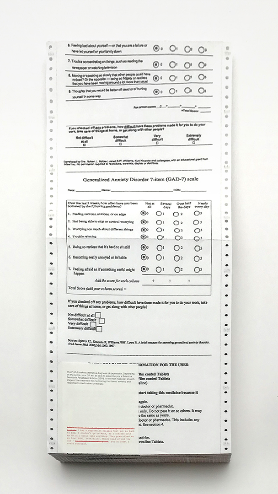
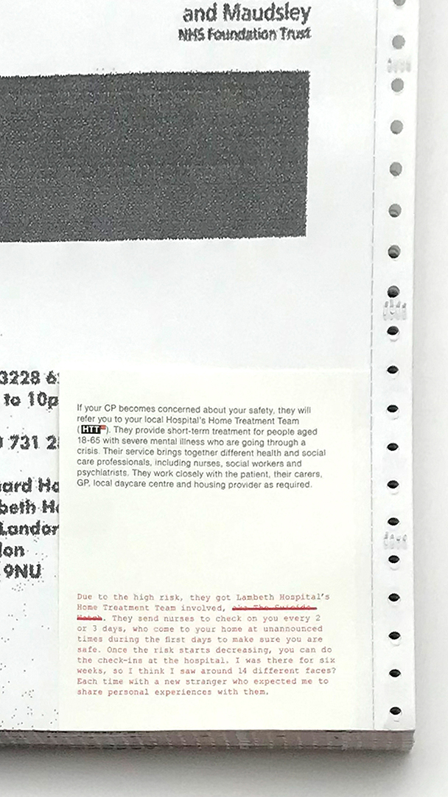
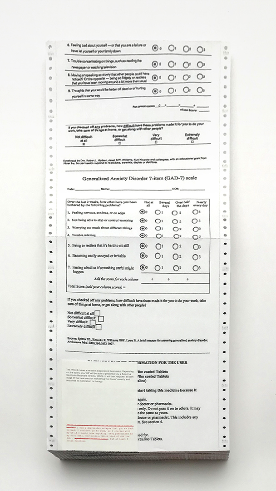
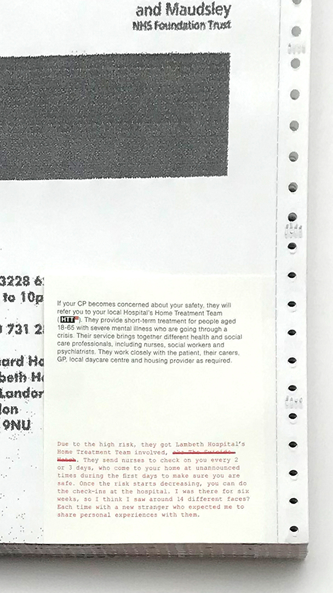

Mental health awareness is currently at its highest, marked by days,
weeks and months on the calendar. This is the achievement of the many
campaigns led by public and private institutions, and the hundreds of
charities built around these issues. The shared goal is to erase the
stigma around mental health disorders and encourage people to seek help.
But what happens when support is sought? What resources are available,
and how do we access them?
We are here to help you is a series of projects in which I revisit my personal experience applying for mental health aid from public services in the UK. Each is presented through different methods of graphic analysis, starting by mapping out the whole journey and then zooming deeper into details.
We are here to help you is a series of projects in which I revisit my personal experience applying for mental health aid from public services in the UK. Each is presented through different methods of graphic analysis, starting by mapping out the whole journey and then zooming deeper into details.


 


